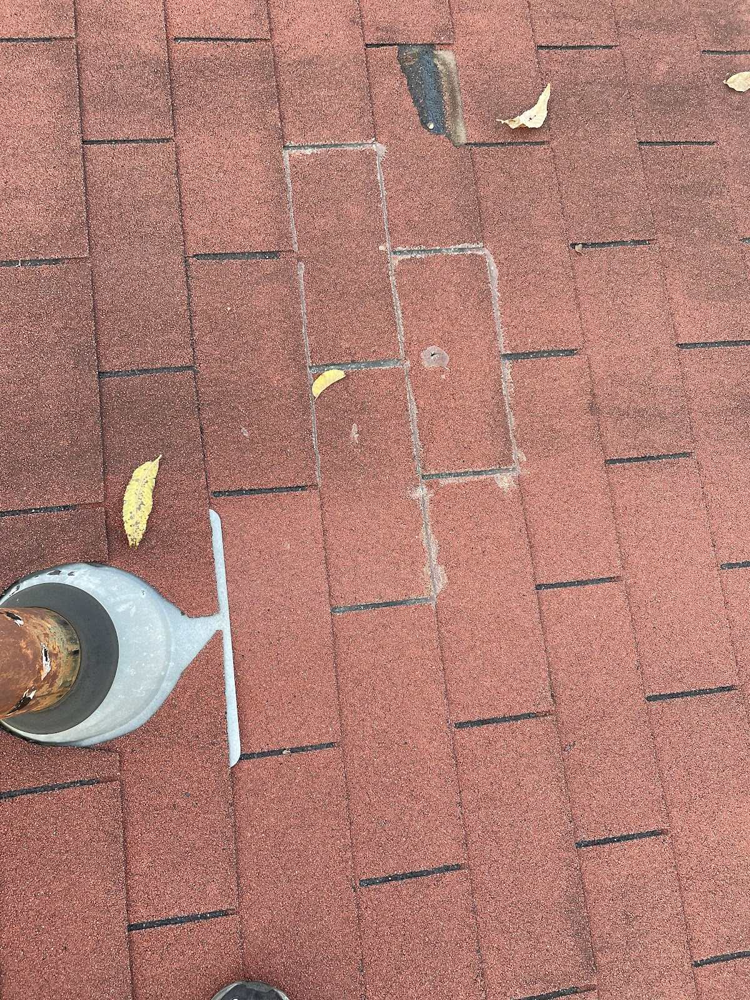
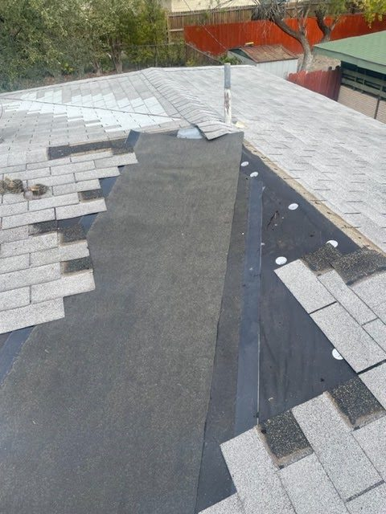
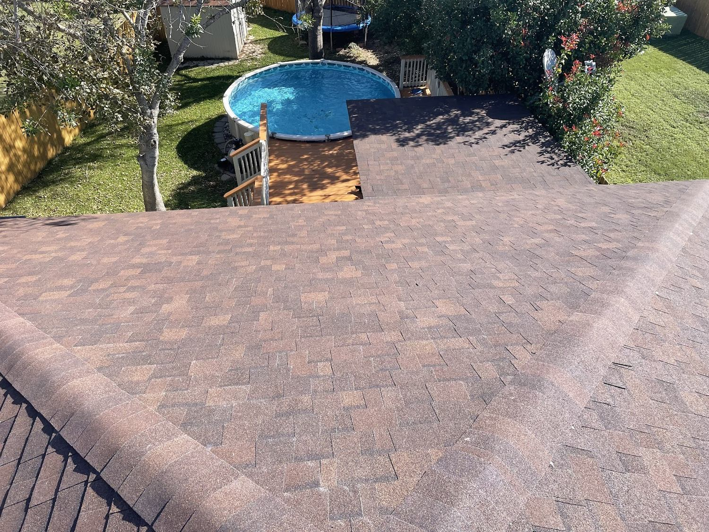
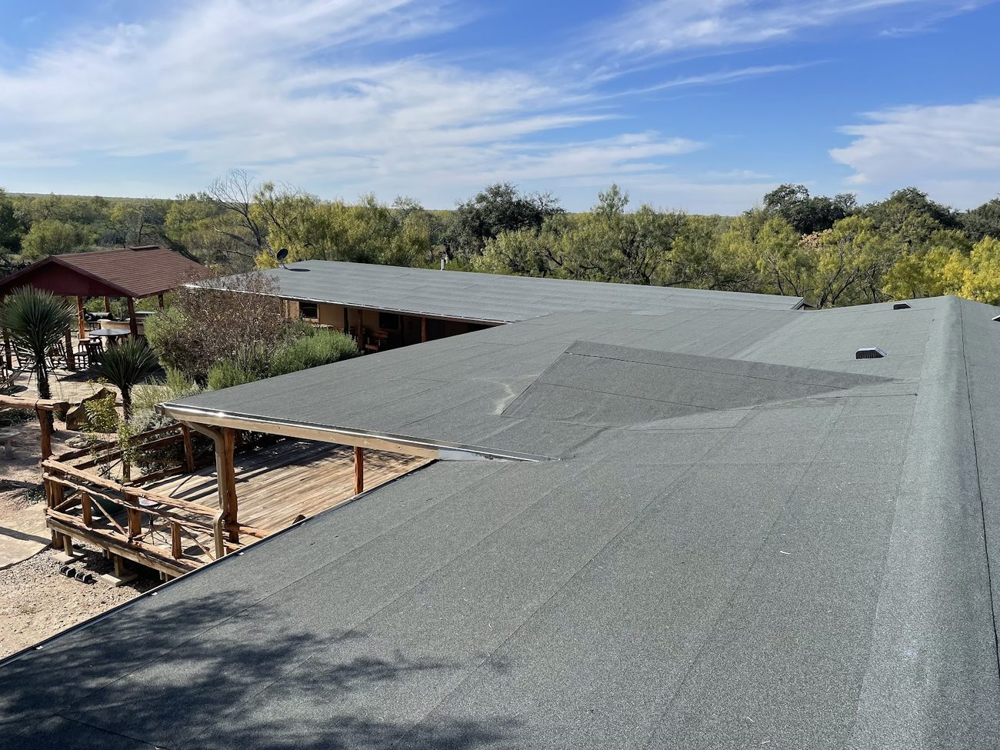
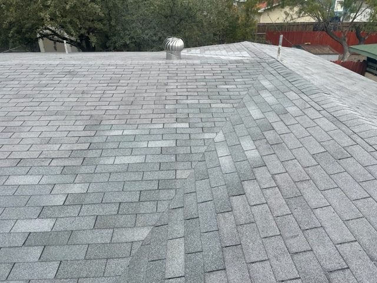

01
Shingles
Granules washed off, tabs lifting or curling, and the age of the field. A shingle roof tells you its age in how the granules look in the gutter.
San Antonio, Texas — and the surrounding area
Roof repair, roof replacement, flat and low-slope roofs, roof inspections and general home repairs. Call or text with the address and what the roof is doing, and we will tell you what we would do about it.
What an inspection looks at
This is the same sequence every time, whether the job is one shingle or a whole roof. It is also the sequence reviewers say they notice: a thorough inspection is the thing that makes the rest make sense.
01
Granules washed off, tabs lifting or curling, and the age of the field. A shingle roof tells you its age in how the granules look in the gutter.

02
Everything that goes through the roof is where water gets in: pipe boots, vents, chimneys, skylights, and the sealant around all of them.
03
Where two slopes meet is the highest volume of water on the whole roof. If it is the same in every valley, that is a roof telling you something.

04
Water that cannot run off has to sit somewhere. Ponding, open seams and a membrane that has gone brittle are the three things we look for.

Finished
A low-slope roof over a patio, and a shingle field on a pitched roof. Different materials, different failures, and the same thing underneath both: somebody looked properly before they started.
Frame 04A low-slope roof running out over a patio
Frame 05A finished grey shingle field
Services

01
Leaks, missing shingles, wind damage and the small jobs that turn into big ones if they wait.

02
Tear-off, deck check, underlayment and the new field. Decided after the inspection, not before it.

03
Membrane, seams, drains and ponding. The roofs that leak slowly are the ones that get missed.

04
A written report with photographs, whether or not you go on to book the work.
05
The rest of the house as well, so a roof repair does not land next to three things that need doing.
5.0
stars on Google
Every Google review: five stars.
C&S Roofing & Remodeling
San Antonio, Texas
A thorough inspection is the word that appears most often, and it is the one that tells you the most about how the rest of the job goes.
Read the reviews on GoogleQuestions
Get a container under it, keep the room clear of anything electrical, and get somebody on the roof before the next rain rather than after it. Water on a ceiling almost always entered somewhere above it, so the stain tells you there is a problem, not where it is. Send a photo of the ceiling and of anything you can see from the ground.
No, and that is why flat roofs get missed. Water on a low-slope roof does not run off, so it sits at the low points, around penetrations and along the edges until it finds somewhere to go through. The signs are a stain that comes back after the roof dries, ponding water, and seams that look wider than they did.
Call or text (210) 316-0886 with the address and what the roof is doing. An inspection comes first, usually with photographs, and you get the findings and the options in writing before anything is agreed. Nothing starts because a salesperson turned up at the door.
One photo of the whole roof from the ground, one of the problem area from as close as you can safely get, and a photo of anything inside that shows it. The age of the roof helps, the number of layers if you know it helps more, and a note on whether the same spot has been patched before tells us a lot.
Contact
Phone is quickest. Text suits a photograph taken from the yard. Email suits anything with insurance paperwork or a scope of work attached.